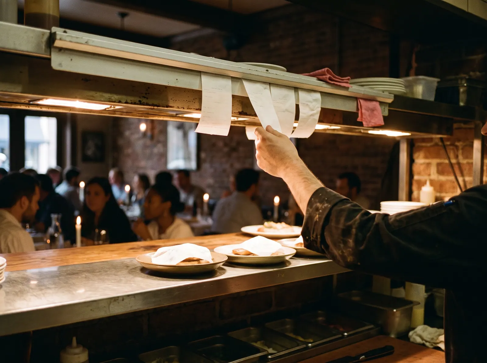
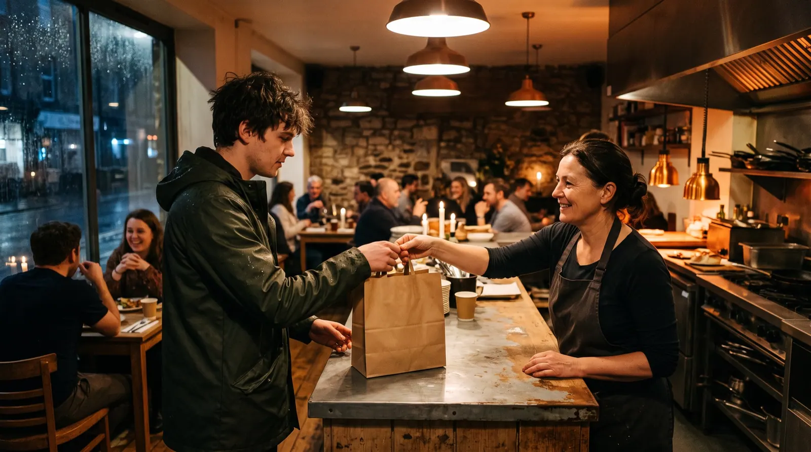
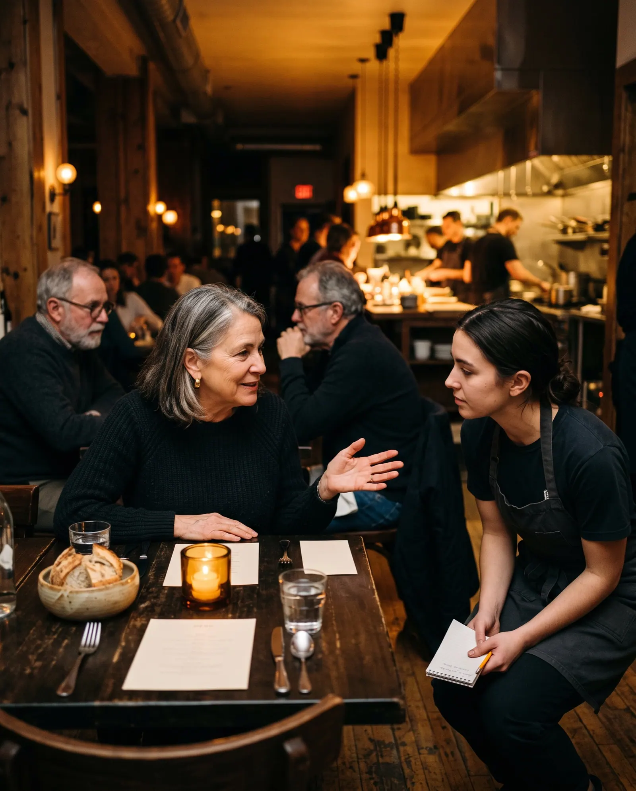
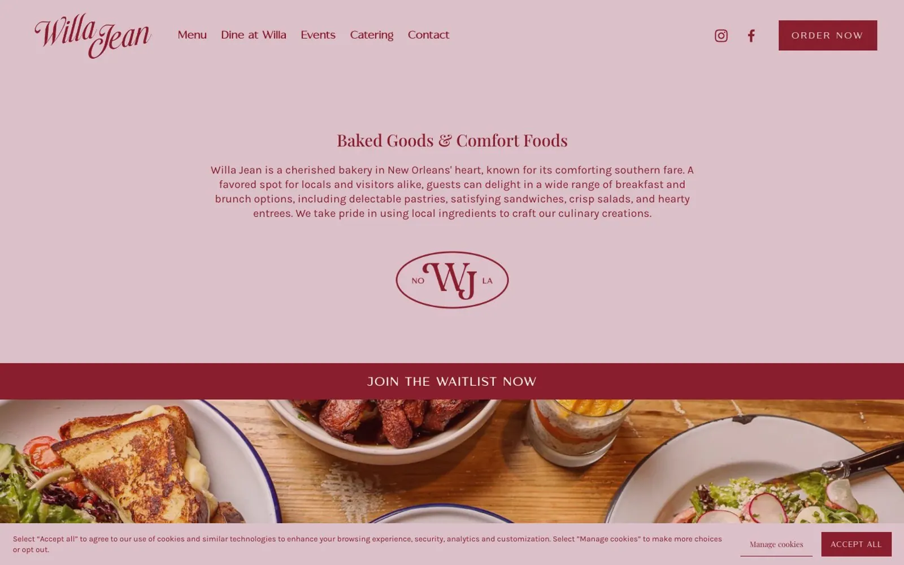
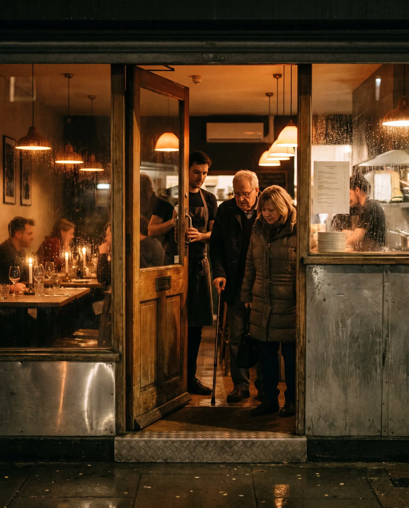

Diners read the menubefore they see the room
We read the websites of 180 independent restaurants, cafés and bars in the US the way a diner does: on a phone, often on the pavement outside, asking what is on the menu, what it costs and whether they can get a table tonight.
0 websites
Four kinds of place
Twelve checks
The State of Independent Restaurant Websites · Q4 2026 · edition 2026-Q4

The headline
of the websites in this study answer the diner's question.
Diners ask eight questions. The median site answers four.
Across 180 independent restaurant websites, the median site answers four of the eight questions diners ask. 49% put the menu up as real text; 29% mark allergens or dietary dishes.1
What a diner can find out before they book
We turned eight questions a diner asks before booking, ordering or walking in into eight checks, then read each site for an answer a hungry person could find on a phone. Each ticket's gauge is drawn to scale.

Share of all websites answering each question · red with an “86” stamp = fewer than a third · tick = half
Figure 1. Share of sites that answer each question on the home page or a page it links to, read from the served HTML. Sorted from least to most answered.

Four kinds of place, side by side
Casual and family restaurants (42): median score 78, the menu as text on 62%, direct ordering on 62%. Chef-driven and fine dining (48): median score 77, the menu as text on 58%, direct ordering on 38%. Cafés and bakeries (45): median score 81, the menu as text on 36%, direct ordering on 47%. Bars and brewpubs (45): median score 79, the menu as text on 40%, direct ordering on 29%.
Where each website scores
Overall website score out of 100, one dot per site; the candle rule is each group's median
Figure 2. Overall website score out of 100, one dot per site. The candle-coloured rule marks each group's median.

The question the server answers all night
0%of sites mark allergens or dietary dishes.
A guest with a nut allergy, or a table with one vegan, picks the place that says so before they arrive. Marking the menu answers the question once, and the server gets the table back.
Four places, up close
Four real sites from this edition, one strong, two in the middle and one weak. Each photograph shows the kind of moment its findings describe; the restaurant itself stays anonymous. The number is the overall website score; each dot is one check, filled when the site passes it.
Willa Jean
Cafés and bakerie, New Orleans, LA. It answers 8 of the 8 diner questions this edition tests, passes every speed and accessibility check. Its overall website score is 91/100. Named as a positive example; every other site in this report is anonymous.

What it does well
- Opening hours shown on the site
- The menu is real text, not a PDF or a photo
- Prices shown on the menu
- Book a table online, or a clear walk-ins-only note
- Order pickup or delivery directly, not only through an app
- Allergens or vegetarian, vegan and gluten-free dishes marked
- Street address with a map link, directions or parking
- Private events, buyouts or catering described
- Real phone visitors see the main content in 1.2 s (Chrome UX Report, 75th percentile; good is 2.5 s or less)
- No text fails the WCAG 1.4.3 contrast minimum
- Every image has a text description (WCAG 1.1.1)
- Clikiti pillar scores of 90 or more: usability 100, accessibility 97, SEO 97, trust 94

The diners left out
A diner using a screen reader, a keyboard, or an old phone on a weak signal outside the door is still a guest. These checks measure whether the site lets them in.3
Table 1. Technical checks, share of the 180 sites that fail each one.
How the sites were read
Read
The home page and up to eight pages it links to (menu, hours and location, reservations, ordering, private events, about, contact), read as a server delivers them. The diner questions are answered here, by fixed published rules (Appendix A4).
Measure
Google Lighthouse (PageSpeed Insights) in a phone and a desktop render, with Chrome UX Report field data where it exists: load time, contrast and image descriptions. Repeatable.
Review
An expert usability review of each home page against Nielsen's heuristics, used only in the usability part of the score. Every issue must name the heuristic, a severity and the element, or it is dropped.
Read the full methodology Sample, definitions, scoring, precision and limitations, in Appendix A.

For agencies and freelancers
What this means for agencies
what to fix first, and how to pitch it
For small agencies and freelancers who sell websites to independent restaurants, cafés and bars. We scanned 180 of their websites: 0% score under 60 out of 100, and 74% leave at least three of the questions diners ask unanswered. Here is where the winnable work is, which problems to lead a pitch with, and how to show them without days of spec design.
Who is realistic to win
Chef-driven and fine dining are the most winnable: the lowest median score in this report (77 out of 100), and 0% of them score under 60. Their problems are visible, specific and fixable by a small team.
| Type | Sites | Median | Under 60 |
|---|---|---|---|
| Casual and family restaurants | 42 | 78 | 0% |
| Chef-driven and fine dining | 48 | 77 | 0% |
| Cafés and bakeries | 45 | 81 | 0% |
| Bars and brewpubs | 45 | 79 | 0% |
Score out of 100. "Under 60" is the share of sites that miss most of what a diner looks for.
5 problems to lead a pitch with
- 84%Restaurant, café or bar structured data Quick fix
Add Restaurant (or CafeOrCoffeeShop, BarOrPub) structured data with address, hours, menu link and booking link.
Search engines and assistants have to guess your hours and where your menu is.
- 71%Can I eat here with my allergy or diet? Content
Mark vegetarian, vegan and gluten-free dishes on the menu, with a short allergen note on how the kitchen handles requests.
A guest with an allergy picks the place that says so before they arrive; the server answers the same question every night.
- 66%What will it cost? Quick fix
Show the price beside every dish on the menu page.
Diners choose where to eat on what it will cost, and the menu makes them guess.
- 64%Text contrast passes 4.5:1 Quick fix
Raise text contrast to at least 4.5:1 in the theme, especially text over food photos.
Parts of the site are hard to read, and it is a WCAG failure.
- 63%Can I get a table without calling? Build
A "Book a table" button on every page, linked to the booking system, or a plain line saying the place is walk-ins only.
A table for Friday means a phone call during service, so people book somewhere else.
Share of sites with the problem. WCAG items are accessibility failures. Every check cites a standard in the method section.
How to show a prospect their problems, and a redesign
- 1Lead with their problem, not your services
Open with one question the site fails, for example restaurant, café or bar structured data (84% of sites in this report miss it), and show the exact page where the answer should be.
- 2Put a number on it
Compare their site with the sector: across 180 independent restaurants, cafés and bars sites, the median scores 78 out of 100 and answers 4 of the 8 questions diners ask. A number travels further inside the client than an opinion.
- 3Show the fix without days of spec work
A rough redesign that answers those questions persuades better than a proposal, but it usually costs a designer a day or two per prospect. You can sketch it by hand, or use Clikiti: the scan is free and shows any site's problems in about a minute, and paid plans draft a redesign of the home page from the prospect's own brand, from about $2.33 per pitch.
Scan a prospect's site free No sign-up. You see what the prospect would see.
Show every owner what their diners see
Clikiti reads a restaurant's site the way a diner does, states what it found, and generates the redesign you present before the first call.
See your market on ClikitiMethodology
How this study was designed, who was included, what was measured and how far the results can be relied on. It is written so that an agency can share it with a owner who wants to check the evidence behind a pitch.
A1. The research question
When a diner looks up an independent restaurant, café or bar online, usually on a phone and often on the pavement outside, can they find out whether it is open tonight, read the menu, see what it costs, get a table or order without calling and without a delivery app, tell whether they can eat there with an allergy or a diet, find the door and somewhere to park, and book it for a party?
Population. Independently owned US restaurants, cafés and bars with one to four locations and their own website, in four groups: casual and family restaurants, chef-driven and fine dining, cafés and bakeries, and bars and brewpubs. These are the hospitality businesses a small or mid-size web agency can realistically win as clients.
A2. Who was studied
The sample was built from local search listings and city dining guides, city by city, then screened so that every site in it is one an independent agency could realistically win.
| Source | What it contributes | Sites |
|---|---|---|
| Local search and city guides, casual and family restaurants | Independent neighbourhood, family and casual restaurants (diners, pizzerias, taquerias, barbecue and the like) found in local search results and city dining guides, city by city | 42 |
| Local search and city guides, chef-driven and fine dining | Chef-owned and independent fine-dining restaurants and bistros found in local search results and city dining guides, city by city | 48 |
| Local search and city guides, cafés and bakeries | Independent cafés, coffee shops that serve food, and bakeries found in local search results and city dining guides, city by city | 45 |
| Local search and city guides, bars and brewpubs | Independent bars that serve food, gastropubs, taverns and brewpubs found in local search results and city dining guides, city by city | 45 |
Included
- An independently owned restaurant, café, bakery or bar with one to four locations and its own website (not a directory, delivery app or social profile)
- Serves food to the public on its premises
- Based in the United States
- Home page responds and shows the business it claims to be (each home page title was checked before scanning)
Excluded
- Chains and franchises: any brand with five or more locations, and restaurants run by a national restaurant group
- Restaurants inside chain hotels or casinos
- Places whose only web presence is a delivery or ordering platform storefront (DoorDash, Grubhub, Uber Eats, Toast, Slice, ChowNow and the like), a social profile or a link page
- Food trucks, ghost kitchens and food halls without a site of their own
- Places reported permanently closed
- Parked, placeholder, under-maintenance, password-protected or unreachable sites, and duplicates
| From list to sample | Sites |
|---|---|
| Candidates listed | 208 |
| Removed at screening: the site refused automated visitors or served a bot challenge (11) | −11 |
| Removed at screening: no page served to automated visitors, or a placeholder (8) | −8 |
| Removed at editorial review: five or more locations or a multi-location group (3), the domain no longer serves the business (3), a hotel's site (1), no site of its own (1) | −8 |
| Cohort | 181 |
| Region (US Census) | Casual and family restaurants | Chef-driven and fine dining | Cafés and bakeries | Bars and brewpubs | All |
|---|---|---|---|---|---|
| Northeast | 11 | 13 | 13 | 8 | 45 |
| Midwest | 10 | 12 | 10 | 13 | 45 |
| South | 11 | 12 | 11 | 12 | 46 |
| West | 10 | 11 | 11 | 12 | 44 |
| All regions | 42 | 48 | 45 | 45 | 180 |
A3. How the sites were read
Pages. The home page, then for each of eight topics (menu, hours and location, reservations, ordering, private events and catering, about, contact, allergens and dietary) the best-matching link on the home page.
Speed and accessibility. Google PageSpeed Insights (Lighthouse) on a mid-range phone profile and on desktop, plus Chrome UX Report data from real visitors over the previous 28 days where Google publishes it for the site.
Crawler conduct. One request at a time to each site, at least 400 ms apart, at most ten pages per site; robots.txt is read and obeyed for every page requested; a site that refuses is left out and never retried. The crawler identifies itself as Mozilla/5.0 (compatible; ClikitiResearch/1.0; +https://clikiti.com).
A4. What was measured
8 questions diners ask before they book, order or walk in, answered from what each site publishes, and 4 technical checks against published standards. A check passes only when the rule below is met; anything the crawler cannot confirm counts as not answered.
| Question | Counts as answered when | Standard |
|---|---|---|
| Are you open tonight?Opening hours shown on the site | Opening hours are shown as text on the home page or a contact, hours, location or about page it links to: at least one day of the week with a time range (for example 'Tue–Sat 5–10 pm'). | Clikiti diner question 1 of 8 |
| Can I read the menu on my phone?The menu is real text, not a PDF or a photo | The menu is readable as text on the site: a menu page (or the home page) carries at least eight dish lines in the served HTML, or a known menu service renders it as text. A menu offered only as a PDF, an image or a link to a delivery app fails. | Diner question 2 · WCAG 1.4.5 |
| What will it cost?Prices shown on the menu | Prices are shown next to dishes on a menu read as text: at least three amounts like '$14' or '14.50' on the menu page. A price only inside a PDF or an image is not seen. | Clikiti diner question 3 of 8 |
| Can I get a table without calling?Book a table online, or a clear walk-ins-only note | A diner can get a table without calling: a link or embedded widget for online reservations (OpenTable, Resy, Tock, SevenRooms, Yelp Reservations and the like, or the site's own booking form), or a clear statement that the place takes walk-ins only or does not take reservations. | Clikiti diner question 4 of 8 |
| Can I order from you directly?Order pickup or delivery directly, not only through an app | A diner can order pickup or delivery directly from the restaurant: a link to the restaurant's own online ordering (its own shop or a commission-free ordering service such as Toast, Square, ChowNow, Clover, BentoBox or a direct storefront). Links only to delivery marketplaces (DoorDash, Uber Eats, Grubhub, Postmates) fail, and so does no ordering at all. | Clikiti diner question 5 of 8 |
| Can I eat here with my allergy or diet?Allergens or vegetarian, vegan and gluten-free dishes marked | Allergens or dietary needs are addressed in text: dishes marked vegetarian, vegan, gluten-free or dairy-free (words or a legend like 'GF', 'V'), or a statement about allergens or how the kitchen handles them. | Clikiti diner question 6 of 8 |
| Where are you, and where do I park?Street address with a map link, directions or parking | The street address is shown as text and comes with a way to get there: a map link or embedded map, directions, or a note about parking. | Clikiti diner question 7 of 8 |
| Can we book you for a party?Private events, buyouts or catering described | Private dining, private events, buyouts, large parties or catering are described on the site or on a page it links to. | Clikiti diner question 8 of 8 |
| Technical checks | ||
| Loads in under 2.5 s on a phoneLoads in under 2.5 s on a phone | Core Web Vitals · LCP | |
| Text contrast passes 4.5:1Text contrast passes 4.5:1 | WCAG 1.4.3 | |
| Images have text descriptionsImages have text descriptions | WCAG 1.1.1 | |
| Restaurant, café or bar structured dataRestaurant, café or bar structured data | Structured data marks the business as a Restaurant, CafeOrCoffeeShop, Bakery, BarOrPub, Brewery, Winery or FoodEstablishment. | Schema.org · FoodEstablishment |
A5. The website score
Each site's overall score (0 to 100) is Clikiti's website score, rubric 2.0.0. It measures the website, not the restaurant, and the diner questions above do not feed it. It is a weighted mean of five pillars:
| Pillar | Weight | Based on |
|---|---|---|
| Usability | 30% | Checks of the home page for broken links and images, and an expert review of the page as rendered on a phone and on a desktop screen, against Jakob Nielsen's ten usability heuristics. Each issue must name the heuristic, a severity on the Nielsen Norman Group scale and the exact element or wording; issues without all three are discarded, and two independent passes must agree. |
| Speed | 25% | Google Lighthouse on a mid-range phone (60%) and on desktop (20%), and real-visitor Core Web Vitals from the Chrome UX Report (20%) where available. |
| Accessibility | 25% | Google Lighthouse accessibility audits (70%) and Clikiti's own WCAG checks of the served page (30%). |
| Search | 10% | Google Lighthouse SEO audits (60%) and Clikiti's own search checks of the served page (40%). |
| Trust | 10% | Google Lighthouse best-practice audits (40%) and security header checks (60%). |
Within a pillar, each issue costs points by severity (critical, high, medium, low) and by how many times it occurs; issues based on judgement count at 70% of measured ones, and duplicates of the same root cause count once. On the four restaurant profiles, the number out of 100 is this overall score, and each dot is one check in its group: filled when the site passes it, hollow when it does not.
A6. Precision
With 180 sites, a share reported for the whole sample is precise to within ±7.3 percentage points at 95% confidence (worst case, a 50% share; 1.96 × √(0.25/n)). By type: casual and family restaurants ±15.1 (n = 42); chef-driven and fine dining ±14.1 (n = 48); cafés and bakeries ±14.6 (n = 45); bars and brewpubs ±14.6 (n = 45). Differences between types smaller than these margins should be read as similar. Percentages are rounded to whole numbers; medians are the middle value of the sites in a group.
A7. Quality control
- Every home page in the cohort was fetched and its title checked against the listed business before scanning, every home page was checked for gambling, pharmacy, adult and crypto spam, and every home page was checked for restaurant content (two repurposed domains were removed)
- Businesses were checked for duplicates across domains by phone number (none found; one shared number belongs to two sister businesses)
- Detection rules were checked against the evidence they record for a sample of passes and fails for every rule, and revised before the final run
- Every published figure is recomputed from the data at build time, and a statement in the text that the data does not support stops the build
- Results are published only after automated checks for missing data, anonymity, accessibility of the report itself and the margin of error statement pass
A8. Limitations
- A point-in-time snapshot: menus, hours and sites change often, and a site may have improved or declined since it was read.
- Only public pages were read: the home page and pages it links to. Booking and ordering flows were not completed, and their accessibility was not tested.
- Answers are read from the page as a server delivers it. Content that only appears after scripts run in the browser (some whole sites, menu widgets and booking tools) is not seen, which the study counts as a gap a search engine or a slow phone would also meet.
- A menu, price or allergen note inside a PDF or an image counts as not found as text; the study does not read PDFs or images.
- The study reports what a website shows. It does not judge any restaurant's food, service or prices, and it does not check whether any allergen statement is accurate.
- Automated accessibility tests find only part of what WCAG covers; keyboard and screen-reader use need a manual audit.
- The sample is a structured list of real, independent businesses, not a random draw. Margins of error are given as a guide to precision, not as a guarantee that the results hold for every business in the country.
A9. Data, licence and corrections
The aggregate results are published as CSV and JSON beside this report under the Creative Commons Attribution 4.0 licence: you may reuse, adapt and share them, including in client proposals, with a credit to Clikiti and a link. No per-site results are published. Corrections and removal requests are reviewed and answered personally; see the end of this report.
Restaurants in this study
The 180 websites in this edition, by type. This list says who was scanned and nothing more: results in this report are shown only in aggregate or anonymously.
Casual and family restaurants (42)
- 12 Bones SmokehouseAsheville, NC
- Avoli OsteriaOmaha, NE
- Baratta'sDes Moines, IA
- Becky's DinerPortland, ME
- Block 16Omaha, NE
- Bocce Club PizzaBuffalo, NY
- Boise Fry CompanyBoise, ID
- Cafe SoriahEugene, OR
- Church Street CafeAlbuquerque, NM
- Comet CafeMilwaukee, WI
- DuckfatPortland, ME
- Fong's PizzaDes Moines, IA
- Garnett's CafeRichmond, VA
- Hop AlleyDenver, CO
- Hydraulic HearthBuffalo, NY
- Izakaya Meiji CompanyEugene, OR
- Juan in a MillionAustin, TX
- Katalina'sColumbus, OH
- Kismet GrillAlbany, NY
- Ma Fischer's DinerMilwaukee, WI
- Mama J'sRichmond, VA
- Matt's El RanchoAustin, TX
- Mildred'sKansas City, MO
- Mrs. Wilkes Dining RoomSavannah, GA
- Olneyville N.Y. SystemProvidence, RI
- Perly's Restaurant & DelicatessenRichmond, VA
- Pizzeria VeritaBurlington, VT
- Prep & PastryTucson, AZ
- Pusadee's GardenPittsburgh, PA
- Q39Kansas City, MO
- Ruth's DinerSalt Lake City, UT
- Sam's No. 3Denver, CO
- Sandfly BBQSavannah, GA
- Santasiero'sBuffalo, NY
- SAW's BBQBirmingham, AL
- Shapiro's DelicatessenIndianapolis, IN
- Sugar's RibsChattanooga, TN
- Tessaro'sPittsburgh, PA
- The Satellite Diner & LoungeSpokane, WA
- Volturno PizzaWorcester, MA
- Willie Mae's Scotch HouseNew Orleans, LA
- Zelda's Original Chicago Style PizzaSacramento, CA
Chef-driven and fine dining (48)
- Al FornoProvidence, RI
- Alba RestaurantDes Moines, IA
- Beppe & Gianni's TrattoriaEugene, OR
- Billy ClubBuffalo, NY
- Bistro Bella VitaGrand Rapids, MI
- BluebeardIndianapolis, IN
- Boiler RoomOmaha, NE
- Brigtsen'sNew Orleans, LA
- Cafe CapriccioAlbany, NY
- Carbone's RistoranteHartford, CT
- Central ProvisionsPortland, ME
- Cúrate Bar de TapasAsheville, NC
- DeliciaIndianapolis, IN
- Easy Bistro & BarChattanooga, TN
- Ella Dining Room and BarSacramento, CA
- Fore StreetPortland, ME
- Galatoire'sNew Orleans, LA
- GrunauerKansas City, MO
- Hemenway'sProvidence, RI
- Hen of the WoodBurlington, VT
- Honey RoadBurlington, VT
- Hot and Hot Fish ClubBirmingham, AL
- KINBoise, ID
- LaunderetteAustin, TX
- Lindey'sColumbus, OH
- LocalisSacramento, CA
- Log HavenSalt Lake City, UT
- Meat & PotatoesPittsburgh, PA
- MerchantMadison, WI
- Metzger Bar & ButcheryRichmond, VA
- MizunaSpokane, WA
- Mulvaney's B&LSacramento, CA
- NovelKansas City, MO
- OberlinProvidence, RI
- Odd DuckAustin, TX
- Odd DuckMilwaukee, WI
- Osteria PapaveroMadison, WI
- PagoSalt Lake City, UT
- Peppercorn's GrillHartford, CT
- Refectory RestaurantColumbus, OH
- Restaurant AntiquityAlbuquerque, NM
- RiojaDenver, CO
- St. John's RestaurantChattanooga, TN
- The GreySavannah, GA
- The Market PlaceAsheville, NC
- The RooseveltRichmond, VA
- Wild Sage BistroSpokane, WA
- Yono'sAlbany, NY
Cafés and bakeries (45)
- Amelia's BreadIndianapolis, IN
- Bard CoffeePortland, ME
- Bean Counter BakeryWorcester, MA
- Bee Coffee RoastersIndianapolis, IN
- Boots Bakery & LoungeSpokane, WA
- Coffee ConnectionProvidence, RI
- Crompton CollectiveWorcester, MA
- Exo Roast Co.Tucson, AZ
- Flying M CoffeeBoise, ID
- Foxy Loxy CafeSavannah, GA
- Golden Crown PanaderiaAlbuquerque, NM
- Gourmandise The BakerySalt Lake City, UT
- Greenbush BakeryMadison, WI
- Hartford Baking CompanyHartford, CT
- Honeypie CafeMilwaukee, WI
- Kafe KerouacColumbus, OH
- Lithuanian BakeryOmaha, NE
- Mad Priest Coffee RoastersChattanooga, TN
- Madison SourdoughMadison, WI
- Niedlov's BreadworksChattanooga, TN
- Northern VesselDes Moines, IA
- Old Europe PastriesAsheville, NC
- Pistacia VeraColumbus, OH
- Plehn's BakeryLouisville, KY
- Prantl's BakeryPittsburgh, PA
- Presta Coffee RoastersTucson, AZ
- Publik Coffee RoastersSalt Lake City, UT
- Quack's 43rd Street BakeryAustin, TX
- Radio BeanBurlington, VT
- Redhawk CoffeePittsburgh, PA
- Rivers and Roads CoffeeDenver, CO
- Satsuma CafeNew Orleans, LA
- Seven Stars BakeryProvidence, RI
- Stacks Espresso BarAlbany, NY
- Standard Baking Co.Portland, ME
- Sub Rosa BakeryRichmond, VA
- Sweet Life PatisserieEugene, OR
- Tandem Coffee RoastersPortland, ME
- Texas French BreadAustin, TX
- The Counter CafeAustin, TX
- Wandering Goat Coffee Co.Eugene, OR
- Wealthy Street BakeryGrand Rapids, MI
- Willa JeanNew Orleans, LA
- Zeke's CoffeePittsburgh, PA
- Zendo CoffeeAlbuquerque, NM
Bars and brewpubs (45)
- Ale AsylumMadison, WI
- Armsby AbbeyWorcester, MA
- Avondale Brewing CompanyBirmingham, AL
- Bacchanal WineNew Orleans, LA
- Banger's Sausage House & Beer GardenAustin, TX
- Barbarian BrewingBoise, ID
- Beer BarSalt Lake City, UT
- Bier Brewery & TaproomIndianapolis, IN
- Bier SteinEugene, OR
- Bittercreek AlehouseBoise, ID
- Brewery EmperialKansas City, MO
- Brown's Brewing CompanyTroy, NY
- Burial Beer Co.Asheville, NC
- Check's CafeLouisville, KY
- Confluence Brewing Co.Des Moines, IA
- Cotton & RyeSavannah, GA
- CureNew Orleans, LA
- Draught House Pub & BreweryAustin, TX
- Exile BrewingDes Moines, IA
- Falls City BeerLouisville, KY
- Farmhouse Tap & GrillBurlington, VT
- Fisher Brewing CompanySalt Lake City, UT
- Foam BrewersBurlington, VT
- Good People Brewing Co.Birmingham, AL
- Great Divide BrewingDenver, CO
- Kelly's Westport InnKansas City, MO
- La Cumbre Brewing Co.Albuquerque, NM
- Libertine Liquor BarIndianapolis, IN
- Manito Tap HouseSpokane, WA
- Marble BreweryAlbuquerque, NM
- Mule BarWinooski (Burlington area), VT
- Nimbus BrewingTucson, AZ
- Palomino BarMilwaukee, WI
- Ratio BeerworksDenver, CO
- Scriptown BrewingOmaha, NE
- Seventh Son BrewingColumbus, OH
- Sovereign RemediesAsheville, NC
- Streets of London PubSacramento, CA
- The CamelRichmond, VA
- The Great Lost BearPortland, ME
- The Mitten Brewing Co.Grand Rapids, MI
- Wicked HopMilwaukee, WI
- Wolf's Ridge BrewingColumbus, OH
- Wolff's BiergartenAlbany, NY
- Wormtown BreweryWorcester, MA
About this study
This report is based on automated scans of publicly available home pages, and pages they link to, run on 2026-10-15. Its findings are a point-in-time technical snapshot of each website. They are not a judgement of any restaurant's food, service or prices, and automated checks may contain errors. This report is not a judgement of the quality of any food, service or price, and it does not assess compliance with any food-safety, allergen-labelling or licensing rule. Clikiti is not affiliated with, and does not endorse, any restaurant listed here; trademarks belong to their owners. The report is provided “as is” under CC BY 4.0, without warranty of any kind. Every person in this report's photographs is AI-generated; none is a real person. The one restaurant screenshot is the featured restaurant's own home page, shown unaltered.
Remove my restaurant from this study
We review every request and reply when it's done; removed restaurants are excluded from future editions.